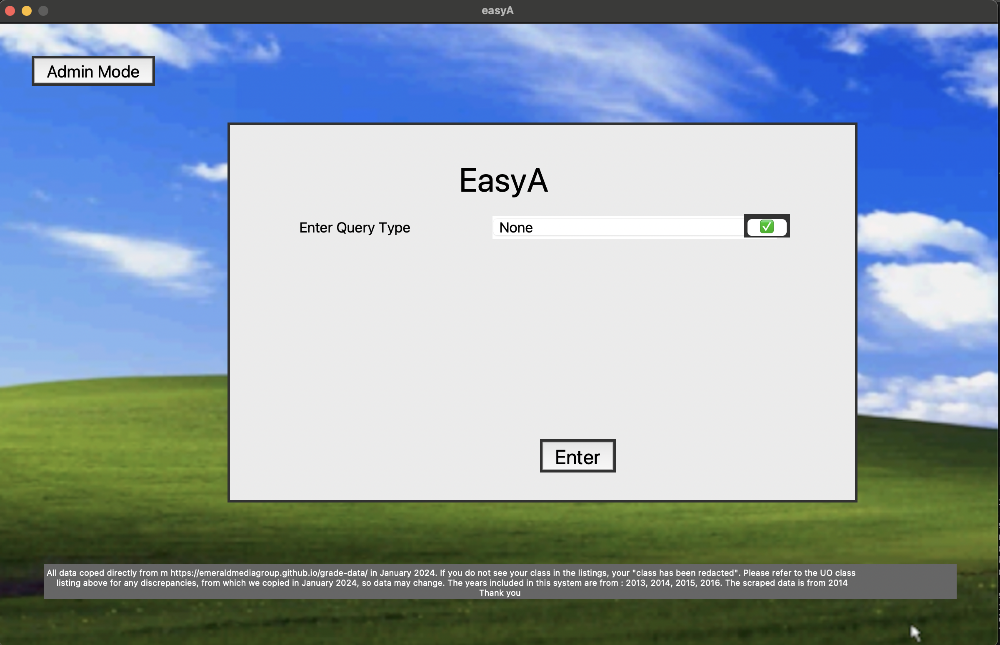
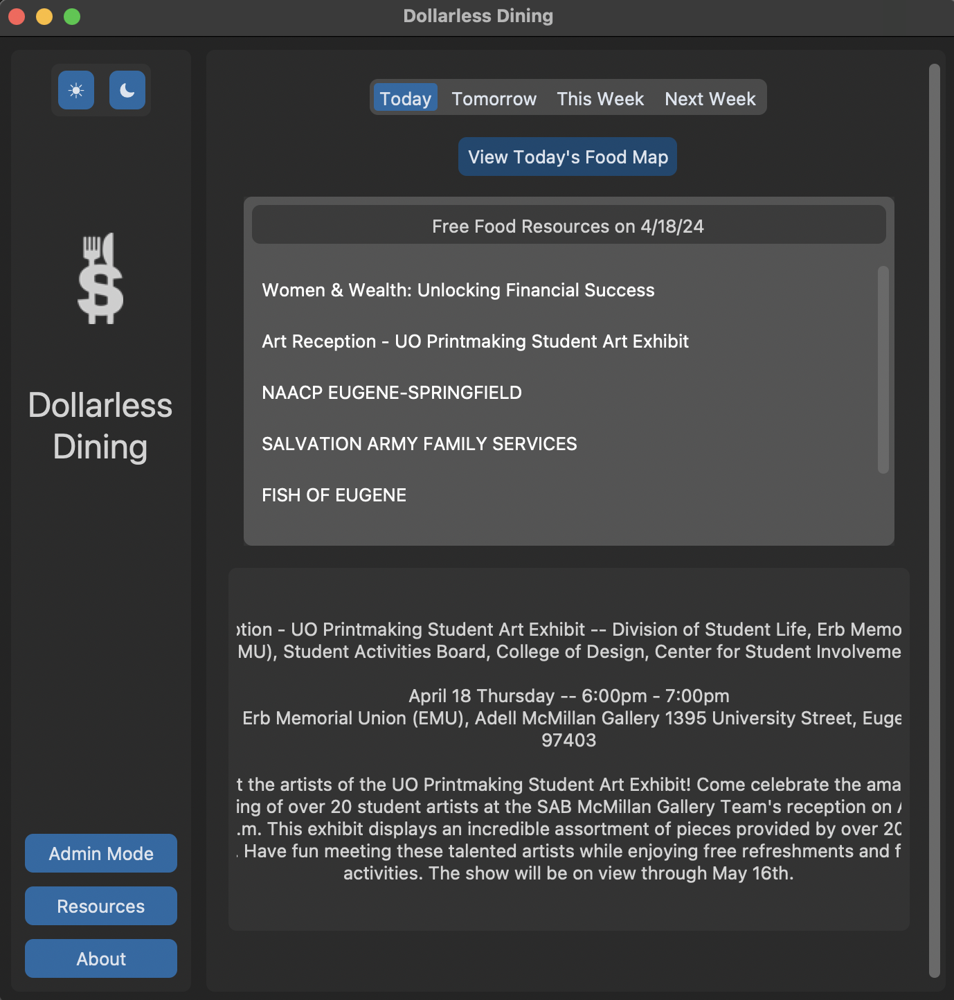
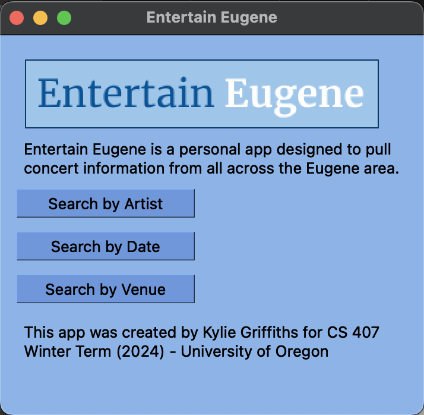

Kylie GriffithsComputer Science and Mathematics undergraduate at the University of Oregon (UO)
Eugene, OR
I am a senior at the University of Oregon in Eugene, Oregon. Formally from Beaverton, Oregon outside of Portland.
I am pursuing a Bachelor of Science in Computer Science and Mathematics. I am seeking full-time employment starting after my intended graduation in June/July of 2025.
Current Courses:
- Math 445 (Intro to Abstract Algebra II)
- CS 453 (Data Mining)
- CS 330 (C/C++ and Unix)
I have been employed as a paper marker for the Mathematics department at UO from March 2023 through December 2024. During the summer of 2024, I attended an undergraduate research experience (REU) at Georgetown University, focusing on machine
learning, neural networks, and using artificial intelligence to examine the prevalence of misinformation across social media platforms. As of December 2024, I am now employed as a lab assistant for the University of Oregon College of Arts and Sciences. The class I am assisting
is CS 111 - Introduction to Web Programming. I run help hours for students with questions to come and work through their problems with me, to help them get a deeper understanding of coding.
In my free time, I enjoy drawing, indoor bouldering, tennis, and playing video games.
Coding Languages:
Python | HTML / CSS | JavaScript | C | C++ | Java | SQL
Profiencies:
macOS/Linux/Windows | MySQL | Data Structures and Algorithms | Machine Learning Models | Neural Networks | GitHub | Node.js | Software Architecture | Frontend Development | Backend Development
| Statistical Data Analysis and Visualization | Git | RESTful APIs | Responsive Web Design | GUI Creation | Software Development Skills | User Experience Design |
Projects:
This list contains links to projects that I have developed both alone and with a larger group.
easyA - Group project for CS 422 (Software Methodologies) at the University of Oregon.
easyA was designed to let students visualize the grade distribution for different classes across the UO.
I built the web scraper and administrative tools responsible for updating the data used.

Link: easyA
Dollarless Dining - Group project for CS 422 (Software Methodologies) at the University of Oregon.
Dollarless Dining is a visualization and information tool for students at the UO to view upcoming
free food resources and where they are found. I came up with the concept, built the web scraper, and developed
admin tools for the updating of the food information.

Link: Dollarless Dining
Entertain Eugene - Solo Project for CS 407 (Career Internships Seminar) at the University of Oregon.
Entertain Eugene allows users to either enter an artist's name, select a venue, or select a date range,
to view upcoming events in Eugene relating to their choice. This was a personal project I created to work with
GUIs and web scraping.

Link: Concert Scan
In August of 2024, I completed an 8-week summer research program (REU) at Georgetown University in Washington, DC. The REU focused on Election Misinformation.
I worked with Dr. Lisa Singh and multiple members of the Georgetown faculty and researchers at the Massive Data Institute (MDI).
Additionally, I worked with nine other students from various universities across the United States.
Our work split us into smaller groups, and my group focused on misinformation-heavy topics on the platform X (formerly Twitter).
In this group, we developed classic machine learning models and later developed neural networks to ready in X posts and binarily classify them
for three themes: election integrity, Trump's charges, and immigration.
As an REU cohort, under the continued guidance of Dr. Singh, we plan to continue our work by writing a research paper showcasing our results and findings.
I would like to sincerely thank Dr. Lisa Singh for the opportunity to conduct this research.
Additionally, I want to thank everyone who helped throughout the program, including the grad students and researchers at MDI
who gave their time and effort to help us succeed.